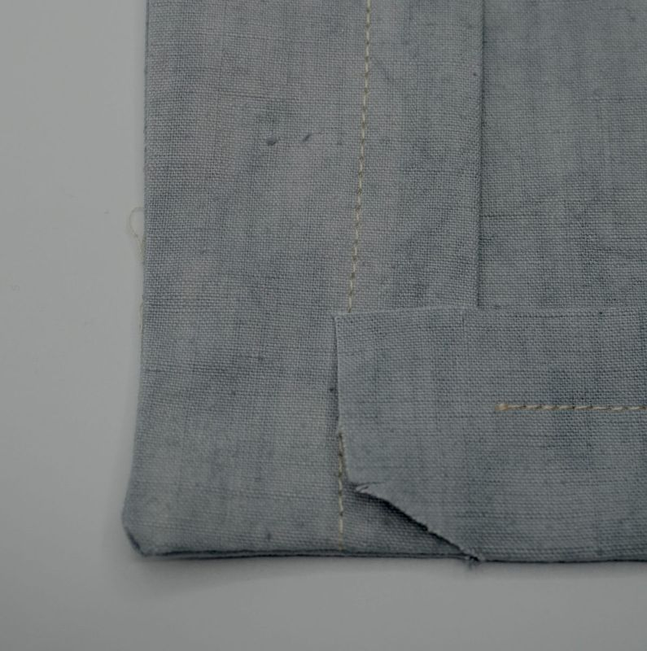

Safari jacket: sewing and assembly guide
This guide gives the order of assembly of the safari jacket, from cutting to attaching the sleeves to the body. It complements the Options guide, which explains the settings of the tool. Always make a test-fabric trial before cutting the final fabric.
1. Cutting
Once the pieces are cut, carefully transfer the marks:
- Left and right fronts. To avoid ending up with two left fronts or two right fronts, lay the fronts face to face, with the buttonhole and button lines against each other. Put the buttonhole marks on the left front and the button marks on the right front (the other way round for a women’s jacket), then give the front of each piece a distinctive mark.
- The bottom fold lines on front and back, the facings and the cuffs.
- The position of the pockets, as you like and in your own dimensions.
- The back darts.
- The top and bottom armhole marks on Sleeve 1 and Sleeve 2.
- A centre mark on the collar, at the central fold, on the bottom side (the less curved one).
- On the front piece, the top mark of the button placket.
2. Overlocking
Overlocking is not compulsory, but it strengthens the seams and gives a neat finish. Overlock:
- Sleeves 1 and 2: all edges except the bottom on the cuff side.
- Facing: all edges except the fold side.
- Back: all edges except the bottom.
- Front: all edges except the bottom and the buttonhole side.
The other pieces are not overlocked.
3. Fusing the interfacing
- The front interfacing goes on the front.
- The collar interfacing goes on the part of the collar that stays visible once the collar is in place and folded over. If you use two fabrics for the collar, the interfacing goes on the visible fabric.
4. Sewing and assembly
Start with the separate pieces, then assemble the sleeves, the back, the front, the bodice, the collar and finally the sleeves onto the bodice.
Folds and small pieces
- Sew the first bottom fold of the Front and Back pieces: fold the bottom at 2 cm and sew at 1.5 cm.
- Sew the fold of the cuffs (fold at 2 cm, sew at 1.5 cm), then assemble the cuffs, sides (a) together, sides (b) together.
- Assemble the collar on three sides, leaving the bottom open, then turn it right side out. Topstitching the three sides improves the result.
Sleeves
- Assemble the sleeve pieces. To avoid two right sleeves or two left sleeves, lay your pieces face to face, in mirror image (sleeve head against sleeve head).
- If you add one or more sleeve pockets and/or a cartridge holder, now is the time: it is harder afterwards.
- Join one side first and topstitch it if you wish, then join the other two sides and overlock them. Overlocking is not compulsory, but it strengthens the seam and gives a particular finish.
- Attach the cuffs to the sleeves. Towards the inside if you add sleeve tabs (right sides together, then turn). Without sleeve tabs, towards the outside or the inside as you prefer; wrong sides together for outer cuffs.
- Turn the cuffs towards the inside or the outside of the sleeve, then sew the cuff and the sleeve at a distance equal to the cuff width minus 0.5 or 1 cm.
Back
- Make the back darts.
Front
- Position your pockets (the position shown on our pattern is only a guide) and assemble them.
- Partly assemble the facings with the fronts, stopping the seam at the top mark of the button placket.
- Turn right side out and press the fold well. No topstitching for now: if you want some, do it after assembling the collar.
- Make the buttonholes.
Front and back: the bodice
- Join the back to the right front and the left front.
- If you have chosen topstitching, topstitch the shoulder seam and the side seams toward the back.
- Press the bottom fold well.
- Tuck the “tabs” that stick out from the fold of the front pieces under the facings.
- Sew the bottom of the pieces between 3 cm and 3.5 cm (the fold being 4 cm wide).


Bodice and collar
- To avoid any confusion, the simplest is to watch a very clear explanatory video: assembling the collar (from the 3rd minute). It has no English subtitles, but it is very clear.
- With the collar assembled, you can finish the seam of the facing with the front.
- Turn right side out: the collar and the front-and-facing assembly are finished.
Bodice and sleeves
This is a standard sleeve assembly, explained in many videos online. The critical point is not mixing up the right and left sleeves.
- With the bodice laid flat, right side up, position the sleeves and mark them with a distinctive sign (for example R and L).
- Place the bodice turned inside out, with the button placket facing you.
- Slide the sleeves in from the inside and pin the seam line. Respect the marks: sleeve top on the shoulder seam, sleeve bottom on the back-front seam.
- Sew, then turn right side out and check your seams. If there are puckers, redo the seam in those places.
- Press the seam towards the bodice and topstitch, if you wish, on the bodice side.
The piece names (Front, Back, Collar, Facing, Sleeve 1 and 2, Cuff 1 and 2) are those of the downloaded PDF.